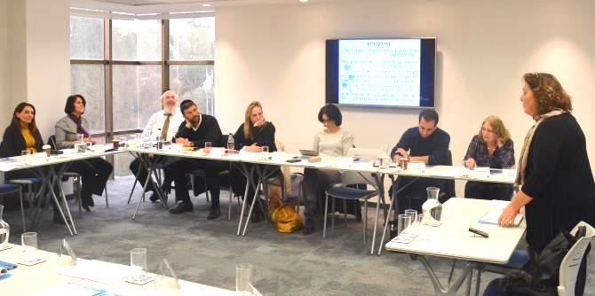

המפגש השלישי של התוכנית נפתח בהרצאתו של באסם אבו אלהיג'א, בוגר מחזור א' של התוכנית לפיתוח מנהיגות חינוכית צעירה בפריפריה. הרצאתו ייצוג הולם לאוכלוסייה הערבית בדירקטוריונים של חברות ממשלתיות עסקה בשוויון ובשותפות אזרחית בין יהודים לערבים בישראל מהפרספקטיבה של שילוב האוכלוסייה הערבית במוקדי קבלת החלטות.
דבריו עוררו דיון בשאלה האם חבר דירקטוריון מהחברה הערבית צריך לייצג את האוכלוסייה הערבית ואת האינטרסים שלה, או את עצמו ואת מומחיותו למען טובת הארגון. תמר שוורץ, בוגרת מחזור כ"ב בבית ספר מנדל למנהיגות חינוכית ומנכ"לית עמותת "רוח נשית", דיברה על חשיבות הגיוון בדירקטוריונים וסיפרה על הקשיים שנתקלה בהם בניסיון לגוון את חברי הוועד המנהל של ארגונה-שלה.
באסם עיאדאת, בוגר מחזור י"א בבית ספר מנדל למנהיגות חינוכית ומפקח כולל של מחוז צפון במשרד החינוך, טען כי יש להחליף את הביטוי "ייצוג הולם", שאיננו ברור דיו בתקנות, ולעגן בחקיקה ברורה את מספרם היחסי של חברי הדירקטוריון מהחברה הערבית.
עו"ד רונית אברמזון השלימה את מושגי היסוד המשפטיים והתמקדה בהרצאתה בסוגיה מי יכול להיות דירקטור ומה נדרש ממנו על-פי החוק. כמו כן סקרה אברמזון את סוגי הדירקטורים – דירקטור חיצוני (דח"צ); דירקטור בלתי תלוי; תאגיד כדירקטור ועוד – ודיברה על תפקידיו העיקריים של הדירקטוריון: להתוות מדיניות ואסטרטגיה ולפקח על המנכ"ל וההנהלה הבכירה. היא ציינה שרוב הדירקטוריונים מתמקדים באחרון ולא בראשון, והוסיפה כי גם המבנה הארגוני של החברה ומדיניות השכר והתגמולים הם באחריותם.

עו"ד ד"ר הדס אהרוני-ברק, מרצה לדיני תאגידים בפקולטה למשפטים באוניברסיטה העברית ועורכת דין העוסקת בנושאים מסחריים, הרצתה על אתגרים בעבודת הדירקטוריון, תוך התמקדות בחברות ציבוריות מהפרספקטיבה של עסקאות בעלי עניין/בעלי שליטה ותגמול בכירים. ד"ר אהרוני-ברק התייחסה לפער שעלול להתגלע בין אינטרסים של בעל שליטה לבין אלו של החברה בע"מ, והדגישה את חשיבות עצמאותו של הדירקטוריון ואת נחיצות יכולתם של חבריו לבקר את פעילות החברה. לדבריה, אין לקבל דברים כמובנים מאליהם ואין להסס לשאול שאלות.
נושא חובות הדירקטורים ומנגנוני הגנה נדון גם בהרצאתה של עו"ד איריס ציבולסקי חביליו, שלה ניסיון וידע רב בתחום המסחרי בכלל ובדיני תאגידים, ניירות ערך ושוק ההון בפרט. עו"ד ציבולסקי-חביליו, המכהנת בעצמה כדירקטורית מטעם הציבור בכמה חברות, הציגה את אחריות הדירקטורים ואת חובות האמון והזהירות החלות עליהם, ואת החשיבות שבקבלת מידע כבסיס לכל החלטה. כמו כן הציגה את מנגנוני ההגנה העומדים לרשות הדירקטורים: ביטוח, פטור ושיפוי, וחידדה את הדקויות שחשוב להיות מודעים אליהן.
לסיום הציגה
רקפת מוסק, מנהלת הייעוצים ביחידת הבוגרים, את ממצאי ההערכה בעקבות שאלון ציפיות מהתוכנית שמילאו הבוגרים במפגש הקודם. בין שאר הממצאים נמצא כי המטרות שהציבה יחידת הבוגרים עבור התוכנית תואמות את ציפיות הבוגרים. בשאלון ציינו הבוגרים כמה מן המטרות שלשם הגשמתן הם שואפים להשתלב בדירקטוריונים ולהרחיב את מעגלי השפעתם: מתן מקום בקבלת החלטות לערכים החברתיים והחינוכיים, הכללת מגוון רחב ככל הניתן של אוכלוסיות שונות בחברות ממשלתית, שמירה על ניקיון ויושרה בחברות ציבוריות, והבאת קולות מהשטח אל מקבלי ההחלטות.
המפגש הרביעי במסגרת ההכשרה יתקיים ב-31 בינואר.
{kind=link}